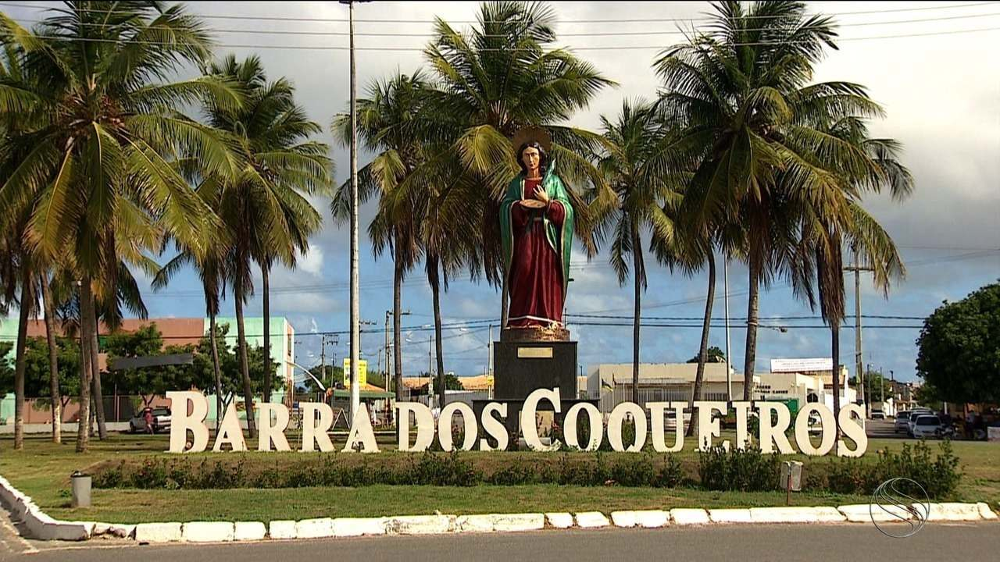

Barra dos Coqueiros
História
Durante a segunda metade do século XVI, a costa sergipana era freqüentada pelos traficantes normandos do pau-brasil. Era a barra do rio Sergipe (barra do Cotinguiba, como então era chamado) o ponto preferido por êsses aventureiros. Portugal pôs fim à pirataria através da conquista das terras intermediárias. entre Bahia e Pernambuco, realizada por Cristóvão de Barros.
Segundo alguns historiadores, o atual Município teria abrigado, nos primeiros anos de sua fundação, a sede do Govêrno da Capitania de Sergipe-del-Rei - São Cristóvão -, fundada por Cristóvão de Barros em 1589, na costa ocidental da ilha dos Coqueiros, à margem esquerda do rio Sergipe e próximo de sua foz, local que corresponde, hoje, ao da Cidade de Barra dos Coqueiros. Era, então, povoado ou, talvez, apenas cidadela.
A abundância de peixes (atum e cavala, principalmente) e crustáceos, no litoral atlântico e nos rios, estimula a pesca, que é feita rotineiramente. O sal marinho constitui a única riqueza mineral, explorada por duas salinas situadas à margem do rio Pomonga. Em 1960, a pesca não colonizada, feita por 72 pescadores, rendeu 7,9 toneladas, no valor de meio milhão de cruzeiros.
fonte: https://cidades.ibge.gov.br/brasil/se/barra-dos-coqueiros/historicoPontos Turísticos
Praia da Costa Sergipe
Localizada na Barra dos Coqueiros, a Praia da Costa Sergipe, é um ótimo programa para o final de semana, para quem gosta da típica praia movimentada e com um mar quente e delicioso.
A estrutura que oferece hoje é adequada, possui uma projeção muito grande de crescimento e oferece diversidade de bares e restaurantes com lazer, bem estar e som ao vivo.
Dados Gerais de acordo com o IBGE
| Prefeito (a) | Alberto Jorge Santos Macedo |
| Vice-Prefeito (a) | Tinho Martins |
| Site do município | https://www.barradoscoqueiros.se.gov.br/ |
| Área territorial | 92,268 km² |
| População estimada | 31.439 pessoas |
| Densidade demográfica | 276,52 hab/km² |
| IDHM | 0,649 |
| PIB per capita | R$ 19.028,51 |